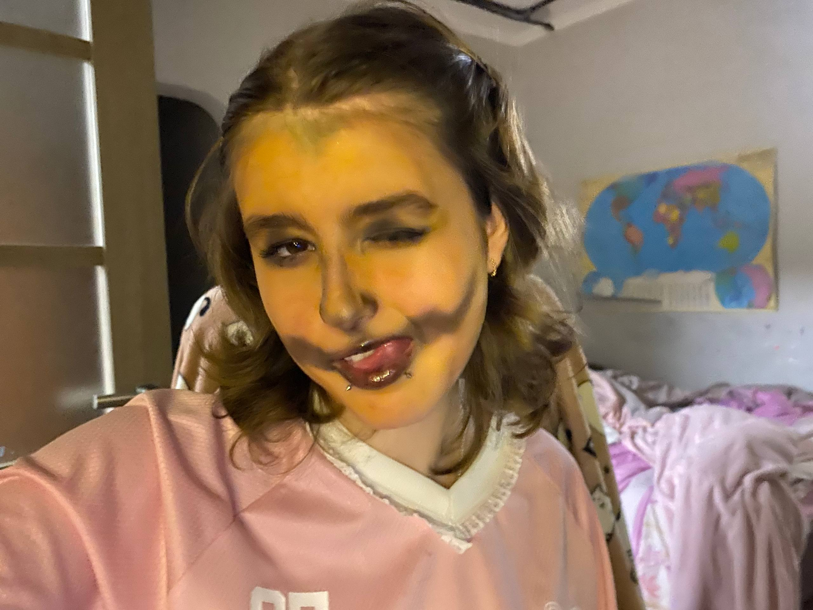
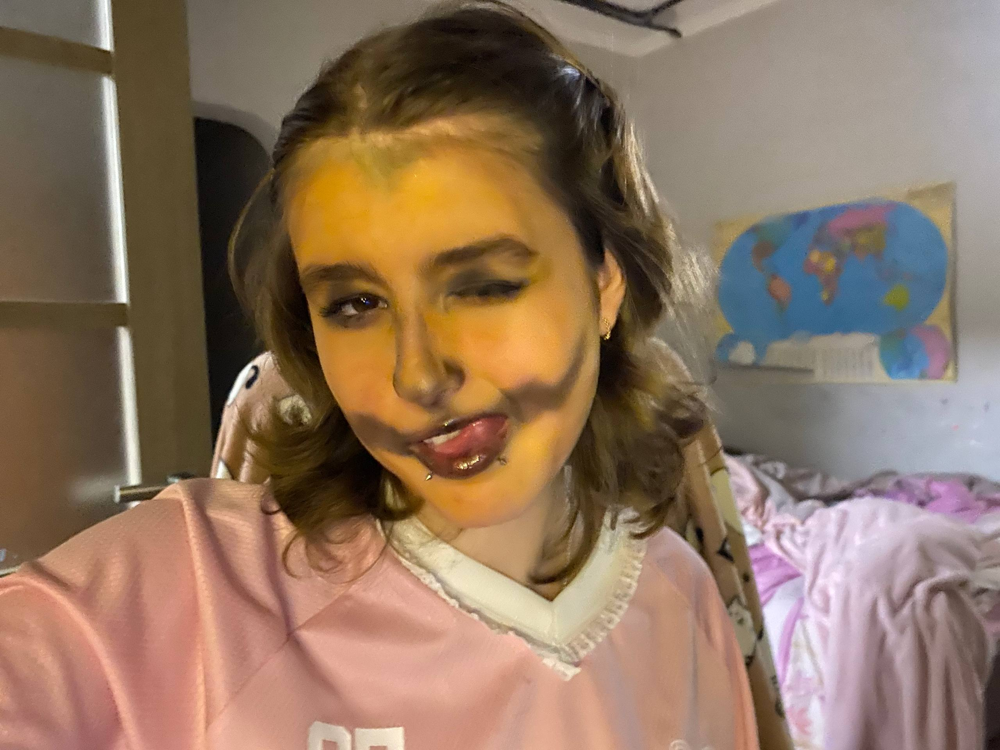

💝 Привет, моё чудо.
Я долго думал, что подарить тебе в качестве главного подарка
Поэтому создал этот сайт — наш маленький мир.
Ты мой лучик света в этом мире полного тьмы,
я очень счастлив что написал тебе в тот вечер.
Пусть мы и разлучены расстоянием, но я знаю мы справимся.

Немножка воспоминаний


 



Наша музыка
Музыка которая тем или иным образом связана с нами
Плейлист
Загрузка...
Выберите песню из списка, чтобы начать воспроизведение.
Письма
Тут периодически будут мои послания тебе хвхвхв
Думаю теперь все большие текста будут здесь, поэтому периодически проверяй этот сайт, он будет обновляться хвхв, пока что просто хочу сказать что очень люблю тебя и жду пока мы преодолеем расстояние и будем жить вместе, не знаю где и как, но будем. Я это знаю, я Оракул хвхввх, ты только моё солнышко! И светишь только мне! А я буду бесконечно загорать под ним хвхввх, и не надо мне никто другой! Люблю только тебя!
Хи-хи-хи, вот и новое письмо, наконец-то я реализовал свою идею, хотя почти в неё уже не верил.. воообщем тут больше делом чем словами хвахвах, просто напомню что люблю тебя <3
Вообщем-то... проверка на внимательность потому что не буду говорить что добавил это письмо и интересно когда ты его увидишь хвхвхв. Просто у меня сейчас столько чувств к тебе, мне хочется что-то больше чем просто "Люблю тебя" потому что это я говорю всегда хоть это и искренне... Вот сидел думал что-бы такого написать пупупу... Пусть я и философ но я не такой писатель как ты хвхв иногда кажется что все слова уже сказаны.. Знаешь.. у меня никогда такого не было, но я в тебя влюбился как минимум 3 раза, и честно хоть это и не так романтично, но когда я тебе первый раз написал Я не влюбился с первого взгляда, ты мне просто понравилась, не знаю чем именно.. Но когда мы уже начали общаться и я узнал тебя ближе, я влюбился именно в твою душу. Ты правда прям сияешь своей душой, ты буквально солнце в этом блеклом мире! То как ты поступаешь, твоя вера в людей, твоё отношение к людям, пусть иногда ты так и не думаешь.. Но ты мой цветочек который успели потоптать за его небольшую жизнь, но я рад что успел подобрать столь прекрасный цветочек до того как случилось что-то страшное.. Я правда очень переживаю за тебя, за твоё здоровье и эмоциональное состояние. Мне очень грустно и печально слышать от тебя про порезы, видеть твои тт про порезы, видеть этот клятый нож.. Возможно для тебя в этом ничего такого Но мне чуть ли не рыдать хочеться когда ты говоришь и думаешь об этом с невозмутимым лицом буд-то в этом ничего такого.. Я правда очень тебя ценю и переживаю.. и не хочу что-бы мой прекрасный цветочек страдал :( Я знаю что тебе тяжело, очень тяжело, у тебя действительно была тяжёлая жизнь.. я понимаю все твои проблемы, понимаю что тебе очень не хватает личного пространства, людей которым можно доверять и с тобой обращались плохо. Но я правда очень не хочу что-бы ты выражала свои негативные эмоции себе во вред.. Но ладно.. Не будем о плохом.. Твоя душа прекрасна, но тело не хуже, ты для меня самая красивая девушка в мире, когда я вижу твои кружочки,липсинги,истории я всё время залипаю и думаю как же мне повезло урвать такую красотку! Честно!!! Я каждый раз очень радуюсь что ты моя. И дорожу каждым моментом пока ты рядом, пусть и не рядом... хвхвхв, ты всегда живёшь в моём сердце, поэтому ближе тебя никого нету! Даже не знаю стоит ли тут пистаь насколько ты секси и как часто я о тебе фантазирую кхм. Но думаю это и так понятно хвхвхв, знаешь, мне неважно сколько ты весишь, где там что по твоему мнению у тебя выперает, я люблю всю тебя. И поверь, если бы ты перешла черту и весила 100 кг, я бы тебе это честно сказал и пошёл бы с тобой вместе в зал! Поэтому пожалуйста, не переживай сильно об этом! Я так же хочу что-бы ты нормально кушала и не устраивала себе голодовку, если тебя это слишком парит, то считай калории, ешь меньше порции Но не пропускай приёмы пищи молю тебя! Я бы набил рожу всем тем уродам которые смели заикнуться на твою внешность или просто на тебя, честно я человека добрее и лучше тебя не встречал и не встречу! Но к сожалению многие в твоей доброте видят слабость.. но это не так! Таких как мы с тобой осталось очень мало, да, все мы не без грехов, но среди всего этого лицемерного говна, ты сияешь ярче солнца! Правда я не знаю как мне досталась такая прелесть, мне некоторое время казалось что ты меня любишь только потому что я уделял и уделяю тебе много внимания которого тебе не хватало, но теперь я вижу что это не так. Всё равно не знаю как ты могла полюбить такого парня как я вхвхх, да, я классный романтик, я умный, но как парень я себя не особо вижу, я старался для многих строить из себя парня.. даже нет.. Мужика. Но мало кто мог разглядеть мою душу за кучей красивых слов. Среди всех моих инет отношений, это первые в которых я правда железобетонно кого-то прям ЛЮБЛЮ, да, это могло прозвучать так себе конечно.. но я в хорошем сенсе Мало кто ценил моё обращение к ним (Почти никто) мало кто замечал мелочи которые заметила ты и хвасталась ими своим знакомым, мало кто мог понять мои проблемы и поддержать меня. Иногда я думаю что в твоих отношениях мог быт кто-то лучше меня, например недавно думал про ту девушку с которй вы спорите сколько вы провстречались, всё же год это большой срок, наверное вы через многое прошли, и всё что было у нас в отношениях было и у вас.. Но знаешь, я уже не переживаю по этому поводу, по скольку мы сейчас там где мы есть, ты любишь меня, а я тебя, и меня всё устраивает. вххвхв вообще у нас прикольный дует, мы оба странные, но по разному, ты глупенькая творческая девушка которая буд-то бегает по солнечному лугу и пытается поймать бабочек в моём представлении. А я человек который слишком много думает, даже через чур, это письмо тому подтверждение.. Я часто очень загоняюсь во все стороны, и боюсь что когда-то ты можешь от этого устать.. Но при этом всём мы друг друга прекрасно во всём понимаем, понимаем какие люди иногда мрази, понимаем как тяжело найти людей похожих на нас, да у меня есть друзья, но они не мои родственные души, мне не нравится многое из их слов и мыслей Но у меня убеждение что если я их в момент брошу, то не найду сил найти кого-то нового, я как-то и не хочу никого больше.. Мне хватает тебя и одного друга для поиграть. Конечно у нас с тобой тоже бывают расхождения во вкусах и мнениях, тот же дипинс, пирсинг и может ещё какие-то мелочи, но знаешь, я изначально хотел насладится своим цветочком, а не переделывать его и обрывать лепестки. Поэтому даже если мне может что-то не нравится, то я всё равно хочу что-бы ты стояла на своём пока это не вредит тебе. Даже если вдруг когда-то наши пути разойдутся, я хочу что-бы ты была собой. Ты не подумай, я хочу провести всю свою жизнь с тобой, но жизнь очень непредсказуемая штука... Но я буду держаться за тебя до последнего, надеюсь ты за меня тоже хвхвхв Люблю тебя солнце, до луны и обратно, интересно знаешь ли ты как образовалась эта фраза взвзв... безумно люблю и некому не отдам, у меня может быть странная реакция на твоё общение с другими, но я тоже не хочу тебя ограничивать в общении и хочу что-бы у тебя тоже были друзья. Но я очень надеюсь что если у тебя появится друг и я попрошу тебя с ним прекратить общение то ты меня послушаешь.. Это будет конечно в крайней мере но всякое может быть.. ладно.. такие вещи уже пишу что лучше бы молчал.. пора спатки пупупу люблю тебя безумно 💋💋💋💋💋💋💋💋💋💋 P.S. Я тут пока с сайтом разбирался и песню добавляю заметил как часто говорю что ты солнце и мой свет пххпхп, хотя изначально ты конечно же моя принцесса, ну просто я люблю что-бы в шутку обращатся на "вы" а тебе такое не нравится, вот и как-то отпало это прозвище, ну и как-то звучит буд-то я твой папа пхпхп Но и как-то солнцем называть тебя всё время наверное не очень, поэтому агент морковка.. хвавха ладна шучу, мне и твоё мя нравится, моя лизонька хихихих, вообще я часто смущаюсь когда например говорю что люблю тебя, или называю как-то так, не знаю на сколько это нормально.. но за то у меня до сих пор шарм первых встреч вххв, это волнение.. люблю тебя!